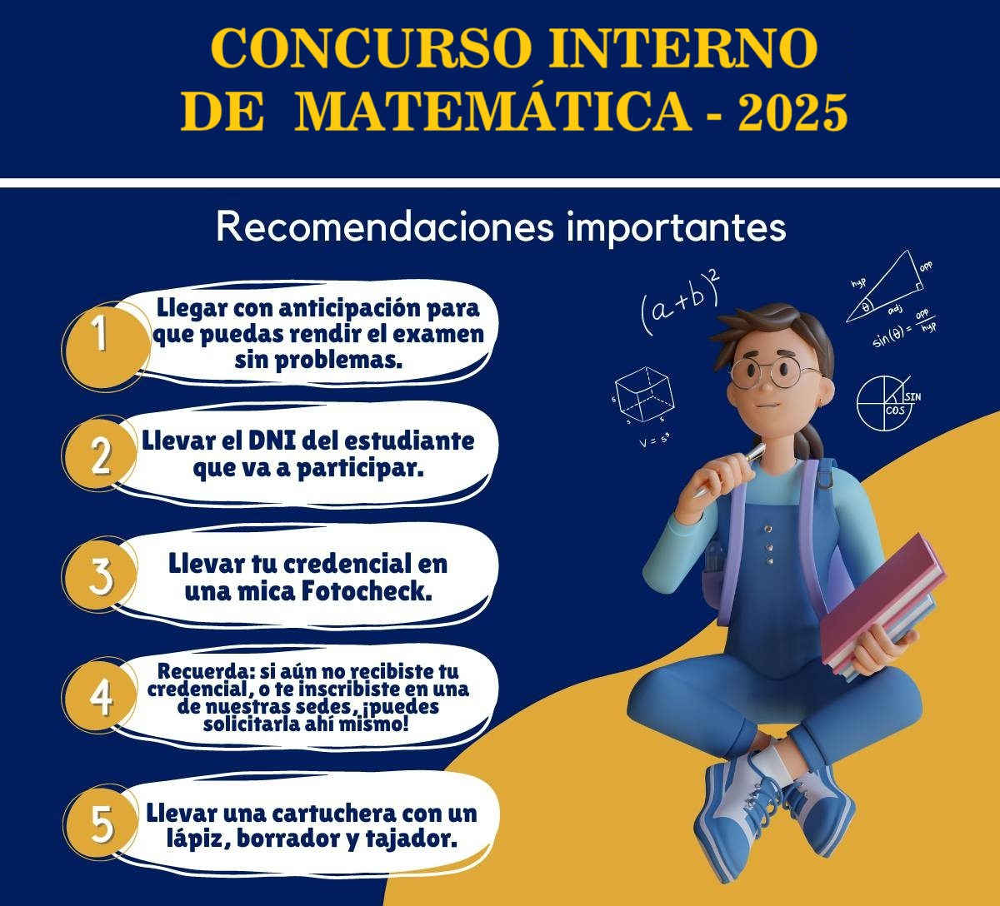
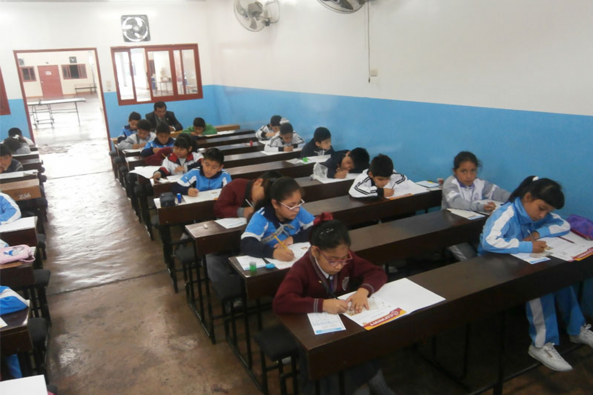

Concurso de Matematica 2025: Sobrinos de Pitagoras
El Concurso de Matemáticas tiene como objetivo fomentar el pensamiento lógico, la resolución de problemas y el gusto por esta disciplina entre los estudiantes. Ademas este Concurso de Matemática, estará diseñada por categorias de acuerdo con el grado de complejidad correspondiente.
Categorias de concurso
- 07 - 09 Años - Categoria - A
- 10 - 12 Años - Categoria - B
- 13 - 14 Años - Categoría - C
"Este concurso permitirá mostrar a los talentos matematematios de este prestigioso colegio FE y Alegria 19" — Directora María López

(Leer bien las recomendaciones ya que no habra lugar a reclamos)

Imagen referencial sobre ladistribucion de los estudiantes
Comentarios (3)
Claudia Mendoza
¡Felicitaciones a todos los participantes! Mi hijo aprendió mucho con su proyecto.